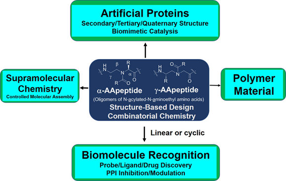

Welcome
Welcome to Cai Research Group! Our team explores research studies at the interface of chemistry and biology, involving chemical biology and bioorganic chemistry, medicinal chemistry, organic synthesis, biochemistry and biophysics, and biomaterials.
About Our Work: AApeptides
Our group advances chemical and biomolecular research, focusing on the design of new molecules for biomedical and material applications. A major goal is to create novel peptidomimetics and small molecules that regulate protein functions in key cellular processes. Studying how these compounds interact with proteins helps reveal mechanisms controlling cell activities.
We aim to develop compounds that could lead to new therapeutics for cancer, diabetes, infectious diseases, and neurodegenerative diseases such as Alzheimer's and Parkinson's. We have created a new class of sequence-specific peptidic foldamers, called AApeptides, inspired by chiral PNA backbones. AApeptides can fold into defined secondary, tertiary, and quaternary structures and show strong potential for recognizing proteins and nucleic acids.
AApeptides are promising as tools or drug candidates to modulate disease-relevant protein-protein interactions and cell signaling. We use two complementary approaches: structure-based design and combinatorial screening, to identify AApeptides with desired functions.
Beyond drug discovery, we are also interested in fundamental science. Using the AApeptide scaffold, we aim to create new artificial proteins, including enzymes with predictable functions. We explore their applications in supramolecular chemistry through controlled self-assembly and in polymer materials via controlled synthesis.
The scheme below highlights our long-term efforts and key research directions. Please visit our research page for more detailed information.
Research Areas
AApeptide Folding
Exploration of secondary, tertiary and quaternary of AApeptides, based on which functions such as enzymatic activity, organic catalysis, and anti-body-like binding are investigated.
Read MoreStructure-Based Design
Based on the helical structures of AApeptides, inhibitors are designed to disrupt disease-related protein-protein interactions such as cancer, diabetes, infectious diseases, neurodegenerative diseases.
Read MoreCombinatorial Screening
Making use of endless chemodiversity, AApeptide combinatorial library screening provides alternative approach to identify molecular probes and drug candidates.
Read MoreSupramolecular Chemistry
Precise manipulation of functional groups on AApeptides leads to controlled self-assembly. The richness in supramolecular chemistry could lead to various functional materials.
Read More